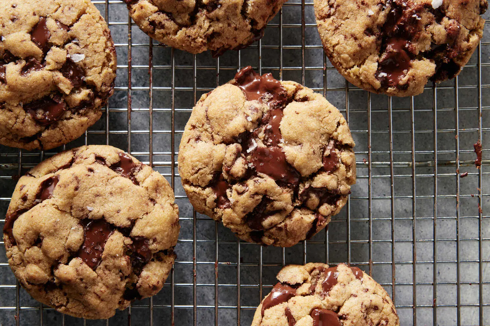

Brown Butter Cookies
Brown Butter Cookies

Description
There is nothing more magical than a gooey-centered, crispy-edged chocolate chip cookie. What makes this particular recipe especially enchanting is the inclusion of brown butter. It mixes right into the dry ingredients, infusing the batter with its nutty flavor without the need for a mixer or any other special equipment. An optional dash of cinnamon has a warmth that feels like a hug, and the brown sugar gives you that chew with a slight molasses taste. Whether for a holiday or an afternoon snack, these cookies may become your go-to.
Ingredients
- Yield:16 cookies
- 1 cup / 226 grams unsalted butter
- 2½ cups / 320 grams all-purpose flour
- 1 teaspoon baking soda
- 1 teaspoon fine sea salt
- ½ teaspoon ground cinnamon (optional)
- 1 cup / 220 grams light brown sugar
- ¼ cup / 50 grams granulated sugar
- 1 large egg plus 1 egg yolk, at room temperature
- 2 teaspoons vanilla extract
- 12 ounces semisweet chocolate, preferably from a bar, roughly chopped (or use 12 ounces chocolate chips)
- Flaky sea salt (optional), for topping
Preparation
-
Step 1: In a medium saucepan over medium heat, melt the butter, stirring and swirling the pan often, until the butter foams, turns golden brown, and smells nutty, about 5 minutes. Pour into a large bowl and set aside to cool.
-
Step 2: In a medium bowl, whisk together the flour, baking soda, salt, and cinnamon (if you like). Line 2 rimmed sheet pans with parchment paper.
-
Step 3: Add the sugars to the melted brown butter; mix until combined. Add the egg, egg yolk, and vanilla extract and stir until combined. Add the flour mixture and stir until well combined.
-
Step 4: Stir in the chocolate. Working one at a time, scoop out a ¼ cup of the dough and roll into a ball. Place the balls on the prepared sheet pans, and chill for 1 hour and up to 24 hours.
-
Step 5: When ready to bake, heat oven to 350°F (175°C). Bake just until the edges start to turn golden, rotating halfway through, about 15 minutes.
-
Step 6: Remove from the oven and bang the pan on the counter. (This creates a flatter, chewier cookie.) Sprinkle cookies with flaky sea salt, if you like. Let sit on the baking sheets for 5 minutes before moving to a cooling rack to cool completely. Store cookies in an airtight container at room temperature for up to 3 days.